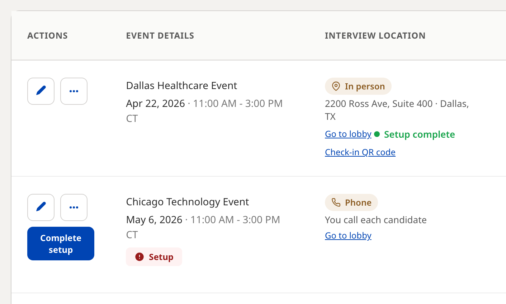
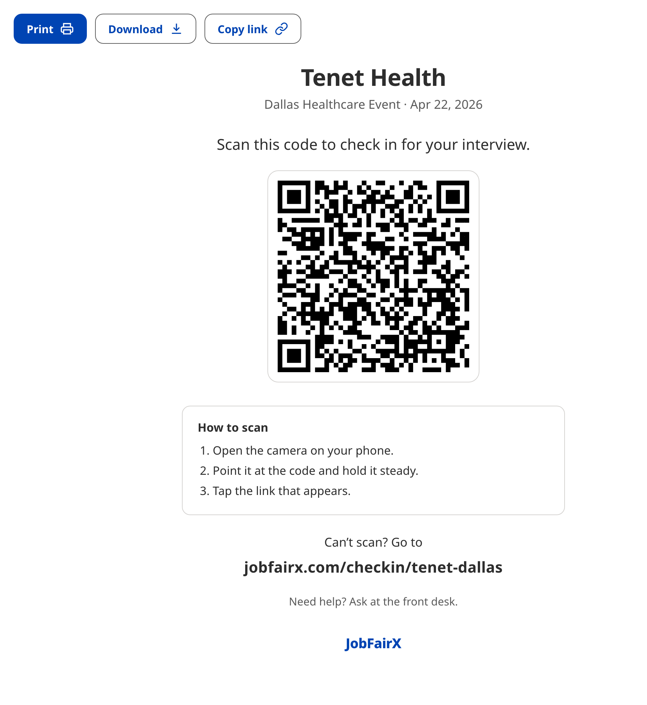
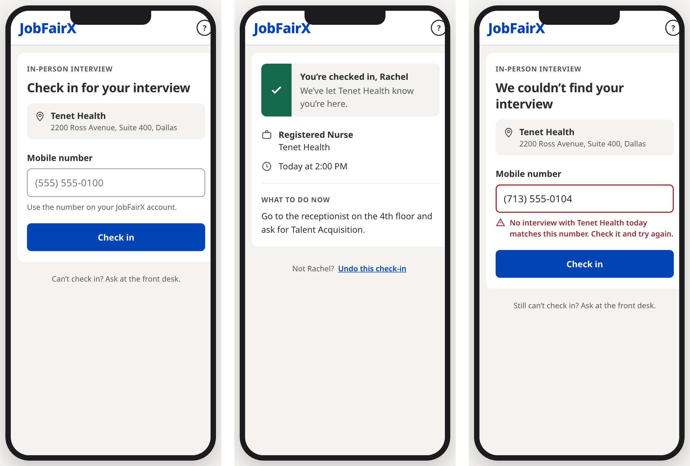
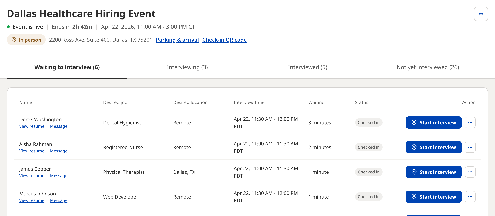
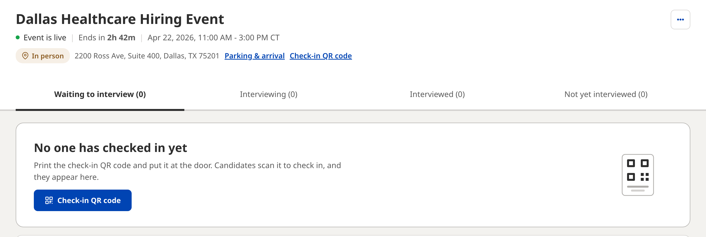
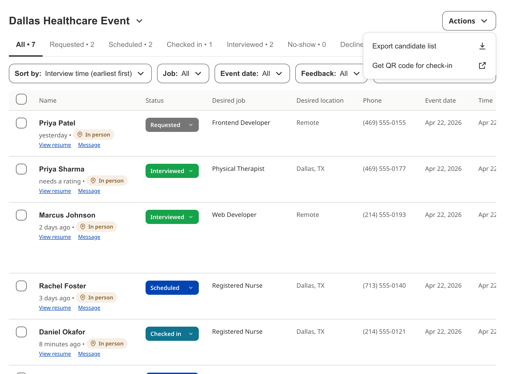

In-person events and the check-in tool
How candidates check themselves in for an in-person interview, where to get your check-in QR code, and how each check-in shows up in your lobby and on the Candidates page.
How check-in works
Check-in is for events where the interview location is In-Person. When a candidate arrives, they scan your check-in QR code with their phone and enter their mobile number. JobFairX matches the number to their interview, and they appear in your lobby, ready for you to start the interview.
- Print your check-in QR code and put it at the door or the front desk.
- A candidate scans it when they arrive and enters their mobile number.
- Their status changes to Checked in and they appear in the lobby under Waiting to interview.
- When you are ready, you select Start interview on their row.
Each event has one code, and every candidate scans the same one. Video and phone events do not use check-in.
Arriving is the candidate's step and starting the interview is yours. A candidate never starts the interview, and the lobby has no button for checking someone in. If a candidate can't check in on their phone, you can check them in by hand from the Candidates page.
Get your check-in QR code
Your event's code is on a printable sign. You can open the sign from four places:
- Your dashboard. In the events list, each upcoming in-person event shows Check-in QR code under Go to lobby.
- The Candidates page. Open Actions at the top right and select Get QR code for check-in.
- The lobby. Select Check-in QR code in the event header, next to the address.
- The day-before email. For an in-person event, the reminder we send the day before has a Print the check-in QR code button.

Print or share the sign

The sign shows your company name, the event and its date, the line Scan this code to check in for your interview., the code, and three short steps for scanning it. Underneath are a short link for a phone that won't scan and a reminder to ask at the front desk for help.
- Print prints the sign.
- Download saves the whole sign as one letter-size image.
- Copy link copies a link to the sign that you can send to whoever runs your front desk. Anyone with the link can open and print the sign.
Place the sign at the door or the front desk, where every candidate passes it. Until someone checks in, the lobby reminds you to put it up.
What candidates see

The code opens a check-in page with your company name and the interview address. The candidate enters their Mobile number, the one on their JobFairX account, and selects Check in.
When the number matches their interview with you that day, the page confirms that they're checked in and that your company knows they're here. It shows their job, their interview time and, under What to do now, the arrival instructions you gave for the event. If someone checks in by mistake, they can select Undo this check-in.
If no interview with your company that day matches the number, the page says We couldn’t find your interview and asks them to check the number and try again. Anyone who still can't check in is asked to go to the front desk. A candidate who scans the code again after checking in sees that they are already checked in.
Check-in is for candidates who have an interview at your event that day. Someone without one can't check in, and the page sends them to the front desk.
When a candidate checks in
In the lobby
The candidate appears under Waiting to interview with the status Checked in. The Waiting column shows how long it has been since they checked in, and whoever has waited longest is at the top. When you are ready, select Start interview on their row.

Until the first candidate checks in, the Waiting to interview tab shows No one has checked in yet with a Check-in QR code button, in case the sign isn't up yet.

On the Candidates page
The candidate's status changes from Scheduled to Checked in, and the Checked in tab counts everyone who has arrived.

Check someone in by hand
If a candidate's phone won't scan, or their number doesn't match, you can check them in yourself. On the Candidates page, open the status menu on their row and choose Checked in.
Candidates who don't arrive
Check-in never marks anyone as a no-show. A candidate who doesn't check in stays Scheduled during the event. When the event ends, the lobby lists them with the candidates who couldn't make their interview.
What to do next
Where to go from here.
- Choosing your interview location Video, in person or phone: what each option asks for and what candidates receive.
- Running your event day What the lobby shows before and during an event, and how to run an interview.
- Creating and editing events Adding jobs, choosing how you interview, and setting capacity.
- Event performance summary Reviewing how an event did and exporting the people who signed up.
- Hiring event best practices Setting up, the run-up, the day itself and afterwards, with a pre-event checklist.
Still need help?
If something on this page does not match what you see in your account, contact JobFairX support and include your event name and date.